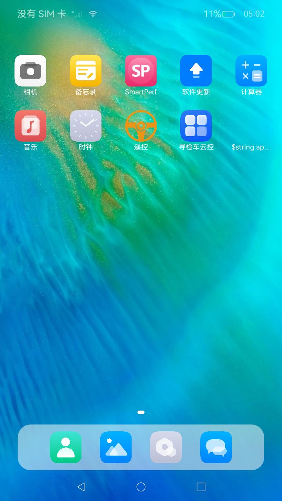

第 ⑦ 步之后 · 设备适配专题 · 2026-11-08 17:02 实测 · 全部命令与输出均为真实执行结果
目标明确：把 E:\Harmony\Project\CarFleet 这个 V3 车队 APP 装到板子上。板子预装的「寻检车云控」不是你的软件，本页不再拿它当交付。
← 返回学习导航 ← 上一份（已订正） ← HAP / 签名基础hdc install 返回 install bundle successfully，板子桌面出现了它的图标；aa start 也返回成功，但进程几秒后被系统杀掉，日志是 Cpp Crash / signal 6。
根因不在签名、不在车、不在网络：包里 ets/modules.abc 是 HarmonyOS 6.0.2(22) 的方舟字节码（ark13.0.1.0），而板子是 OpenHarmony 5.0.3.135 / API 15。改 module.json 里的版本号只能骗过安装器的静态检查，骗不过真正执行代码的运行时。要真正跑起来，必须用匹配板子的 SDK 把源码重新编译一遍，没有第二条捷径。
| 环节 | 结果 | 证据 |
|---|---|---|
| 确认目标软件 | 明确 是 CarFleet，不是板子预装应用 | 用户两次确认；v3-fleet 目录内没有任何 .ets / module.json5 |
| 原包直接装 | 失败 9568322 | signature verification failed due to not trusted app source（HarmonyOS 商用调试签名） |
| 换 OpenHarmony 官方调试签名 | 成功 | sign-profile success + Sign Hap success! |
| 按 OpenHarmony 规则降版本声明 | 安装成功 | install bundle successfully；bm dump -a 出现 com.example.carfleet；桌面出现图标 |
| 启动运行 | 崩溃 | Kill Reason:Cpp Crash、exit with signal:6、SafeInsideStub: The stub file is not loaded |
| 连后端控车 | 未到这一步 | PC 的 V3 后端当前没在跑（你取消了那个后台进程），而且 APP 本身还没跑起来 |
把装 APP 想成拿一盘磁带去一台老录音机上播放：
门卫先查你有没有进门资格。CarFleet 原来那张门票是 HarmonyOS 商场发的，板子不认 → 9568322。换成 OpenHarmony 官方调试门票（绑定板子 UDID）后，门开了。
门卫还看封面上写「适用机型」。原标签写 minAPIVersion=60002022（HarmonyOS 的 8 位编码），板子按 OpenHarmony 规则一读，觉得「我版本太老」→ 9568297。改成 12 后放行。
前两关都是看包装。真正放音时，老录音机读不懂新格式 → Cpp Crash。这就是 ets/modules.abc，它由 DevEco 用 API 22 工具链编译，改包装改不了它。
| 对象 | 路径 / 值 | 说明 |
|---|---|---|
| V3 项目本体 | E:\Harmony\Project\v3-fleet | 里面没有 APP 工程：只有 server/（Flask 8000）、device/（模拟器）、web/（监控/后台/轨迹/AI 页面）、docs/。全项目 find *.ets 结果为 0 |
| V3 的 APP | E:\Harmony\Project\CarFleet | 独立的 HarmonyOS 工程，bundleName=com.example.carfleet，四视图（车队/操控/轨迹/后台）+ 后来的 AI 控车入口 |
| 编译配置 | CarFleet\build-profile.json5 | runtimeOS: HarmonyOS、targetSdkVersion/compatibleSdkVersion: 6.0.2(22)、签名类型 HarmonyOS |
| 包内真实声明 | entry-default-unsigned.hap → module.json | compileSdkType=HarmonyOS、minAPIVersion=60002022、virtualMachine=ark13.0.1.0、deviceTypes=["phone"] |
| 板子 | 润和 HH-SCDAYU200 / RK3568 | hdc 序列号 dd011a4144363141301012700805ac00；系统 OpenHarmony 5.0.3.135 / API 15；UDID 5EEB7A6C...A071C |
| 板子预装应用 | com.example.smart_car_oh | appDistributionType: os_integration，系统镜像自带，不是你的软件；「寻检车云控」是它 |
| 本机可用 SDK | API 20 / 22 / 26 | 关键缺口 没有 API 12/15，所以暂时编不出板子能跑的包 |

桌面第二行右侧那个标签显示 $string:app 的图标，就是刚装上的 com.example.carfleet。标签没解析出来也是资源索引与板子运行时不匹配的又一个信号；其余「寻检车云控」「遥控」等是板子原有应用。
| 文件 | 作用 |
|---|---|
| CarFleet\entry\build\default\outputs\default\carfleet-oh-unsigned.hap | 从官方未签名包重打：版本声明改成 OpenHarmony 规则、补 deviceTypes |
| ...\carfleet-oh-signed.hap | 最终成品，370128 字节，已装进板子 |
| OpenHarmonySDK\signing\carfleet-debug-profile.json / .p7b | 绑定 com.example.carfleet + 板子 UDID 的调试 profile（p7b 为已签名版） |
| OpenHarmonySDK\signing\profile-correct-chain.pem | 从已验证 p7b 导出的 CA 签发 leaf，拼成 leaf → CA → root 三级证书链 |
| docs\DAYU200-CarFleet-运行截图.jpeg | 安装后的板子桌面实拍 |
CarFleet 源码、build-profile.json5、module.json5 一行没改；改动只发生在构建产物和签名材料上。
# 1) 生成绑定板子的调试 profile java -jar hap-sign-tool.jar sign-profile ^ -mode localSign ^ -keyAlias "openharmony application profile debug" ^ -profileCertFile profile-correct-chain.pem ^ -inFile carfleet-debug-profile.json ^ -signAlg SHA256withECDSA ^ -keystoreFile OpenHarmony.p12 ^ -keystorePwd 123456 -keyPwd 123456 ^ -outFile carfleet-debug-profile.p7b # 2) 用官方应用证书签 HAP java -jar hap-sign-tool.jar sign-app ^ -mode localSign ^ -keyAlias "openharmony application release" ^ -appCertFile app-sign-chain.pem ^ -profileFile carfleet-debug-profile.p7b ^ -inFile carfleet-oh-unsigned.hap ^ -signAlg SHA256withECDSA ^ -keystoreFile OpenHarmony.p12 ^ -keystorePwd 123456 -keyPwd 123456 ^ -outFile carfleet-oh-signed.hap # 3) 安装 / 启动 / 看日志 hdc -t <板子序列号> install -r carfleet-oh-signed.hap hdc -t <板子序列号> shell aa start -b com.example.carfleet -a EntryAbility hdc -t <板子序列号> shell "hilog -x | grep -iE 'carfleet|crash|ArkCompiler'"
工具位置：E:\Harmony\AppData\Local\OPenHarmony\Sdk\20\toolchains\lib\hap-sign-tool.jar；Java 用 DevEco Studio\jbr\bin\java.exe。签名口令是 SDK 自带调试证书的公开默认值，不含你的账号密钥。
下面 8 步是这次实际走过的顺序，每一步的终端输出都是原样记录。点按钮或按键盘左右键切换；点图中方块可看该层职责。
| 尝试 | 返回 | 含义 | 下一步 |
|---|---|---|---|
| 原签名包直接装 | 9568322 | 签名来源不被信任（HarmonyOS 调试证书，板子不认） | 换 OpenHarmony 官方调试签名 |
profile-debug-chain.pem 签 profile | 11013002 | 证书链签名不匹配（首张 leaf 是自签的） | 从已验证 p7b 里导出 CA 签发的 leaf |
单张 profile-debug-leaf.pem | 11013004 | profile 证书必须是三级链，不能只给一张 | 拼 leaf → Application CA → Root CA |
降版本但用 50003015 | 9568297 | older sdk version in the device，HarmonyOS 8 位编码被按 OH 规则读 | 改成纯数字 12，与板上已装应用一致 |
| 最终包 | install bundle successfully | 静态检查全过，图标进桌面 | 启动 → 撞上运行时崩溃 |
127.0.0.1:5555，API 22）能直接跑它 —— 但那是模拟器，不是这块板。另外 PC 的 V3 后端现在没在跑（你取消了后台进程），就算 APP 起来了也要先重启 python server\app.py，地址填 PC 局域网 IP 或借助 rport 转发。| # | 现象 | 原因 / 处理 |
|---|---|---|
| 1 | 以为 v3-fleet 目录里有 APP | 那里只有 Python 后端 + 网页 + 模拟器；APP 工程在隔壁 CarFleet。找错目录会白忙 |
| 2 | 把板子预装的「寻检车云控」当成自己的软件 | 它是 os_integration 系统预置应用，界面像 V3 但不是；交付前先跟用户确认包名 |
| 3 | 9568322 not trusted app source | HarmonyOS 商用调试签名板子不认；要用 OpenHarmony SDK 自带证书 + 绑定设备 UDID 的 debug profile |
| 4 | profile 里 bundle-name 与包不一致 | 必须和 module.json 的 bundleName 完全一致，否则签名校验失败 |
| 5 | profile 证书链随便拿一个 pem 就签 | 要三级链且 leaf 必须由 Application CA 签发；可从已 verify-profile 通过的 p7b 里导出正确 leaf |
| 6 | minAPIVersion=50003015 仍报设备太旧 | HarmonyOS 与 OpenHarmony 的版本编码规则不同，板子按纯 API 数字读；参照板上已装应用改成 12 |
| 7 | deviceTypes: ["phone"] | 板子不是 phone；补 default / tablet，否则可能被设备类型过滤 |
| 8 | 装上了就以为成功 | 一定要 aa start + ps -ef + hilog 三连验收；start ability successfully 不代表进程活着 |
| 9 | 桌面图标显示 $string:app | 资源索引未按板子运行时正确解析，是字节码/资源格式不兼容的旁证 |
| 10 | 想靠改 module.json 骗过运行时 | 不行。ets/modules.abc 才是真正执行的代码，只能用匹配 SDK 重新编译 |
| 11 | 本机 SDK 只有 20/22/26 却想编 API 15 的包 | 先补 SDK（OpenHarmony 官方 API 12/15），或把板子刷到 7.0/API 26；本机没有刷机镜像 |
| 12 | APP 起来了却连不上后端 | PC 的 server\app.py 必须先跑；板子走 WiFi 要填 PC 局域网 IP 并放行防火墙 8000，走 USB 用 hdc rport tcp:8000 tcp:8000 后填 127.0.0.1:8000 |
# 看包里到底声明了什么
python -c "import zipfile,json;z=zipfile.ZipFile(r'CarFleet\entry\build\default\outputs\default\entry-default-unsigned.hap');\
j=json.loads(z.read('module.json'));print(j['app']['minAPIVersion'],j['module']['virtualMachine'])"
# 看板子真实版本（别信「关于设备」页面）
hdc -t <板子序列号> shell "param get const.ohos.apiversion; param get const.product.software.version"
# 看装完是否活着
hdc -t <板子序列号> shell "ps -ef | grep com.example.carfleet"
把两条版本数字摆在一起看，就能自己判断「这个包该不该装到这块板」。
com.example.carfleet（会闪退，保留着以便你查看）；成品包 carfleet-oh-signed.hap；签名材料 carfleet-debug-profile.* / profile-correct-chain.pem；截图 DAYU200-CarFleet-运行截图.jpeg；本教材；上一份《把软件装到 DAYU200 开发板》已订正错误结论。没有烧录系统、没有改 CarFleet 源码、没有写入任何账号密钥。